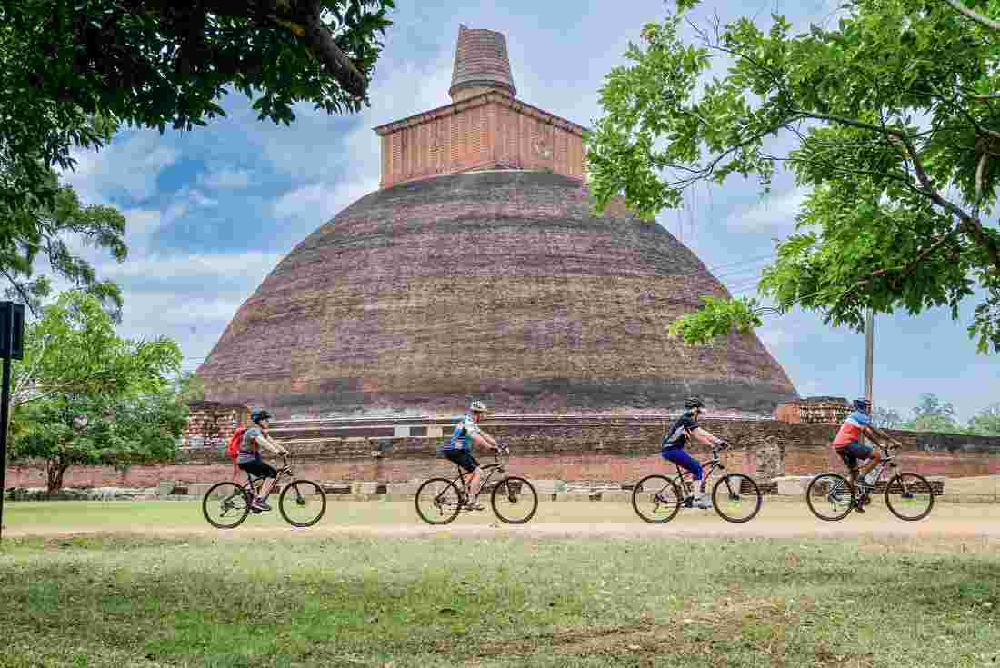
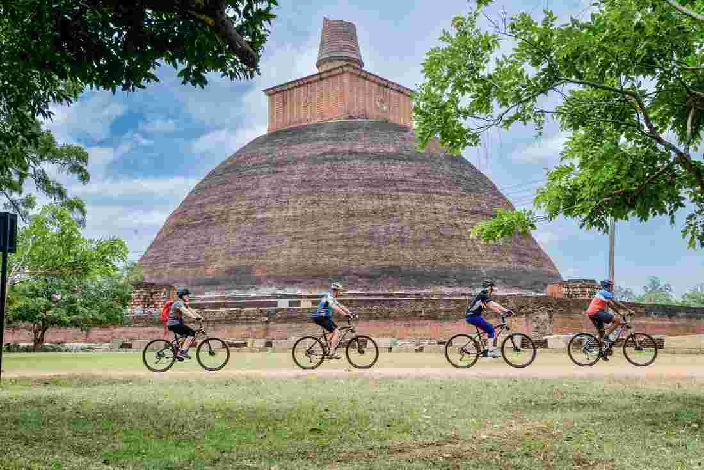

Loja de produtos de mobilidade privada suave.
Partidas em 2019 com as Rodas nas pernas:
| Datas | Destino | |
|---|---|---|
| Partida | Chegada | |
| Jul-28 | Aug-09 | Santiago de Compostela |
| Set-02 | Set-14 | |
| --------------------------------------------- | ||
| Jun-15 | Jun-32 | Granada |
| Jul-15 | Jul-31 | |
| Aug-15 | Aug-31 | |
| Set-15 | Set-31 | |

 
